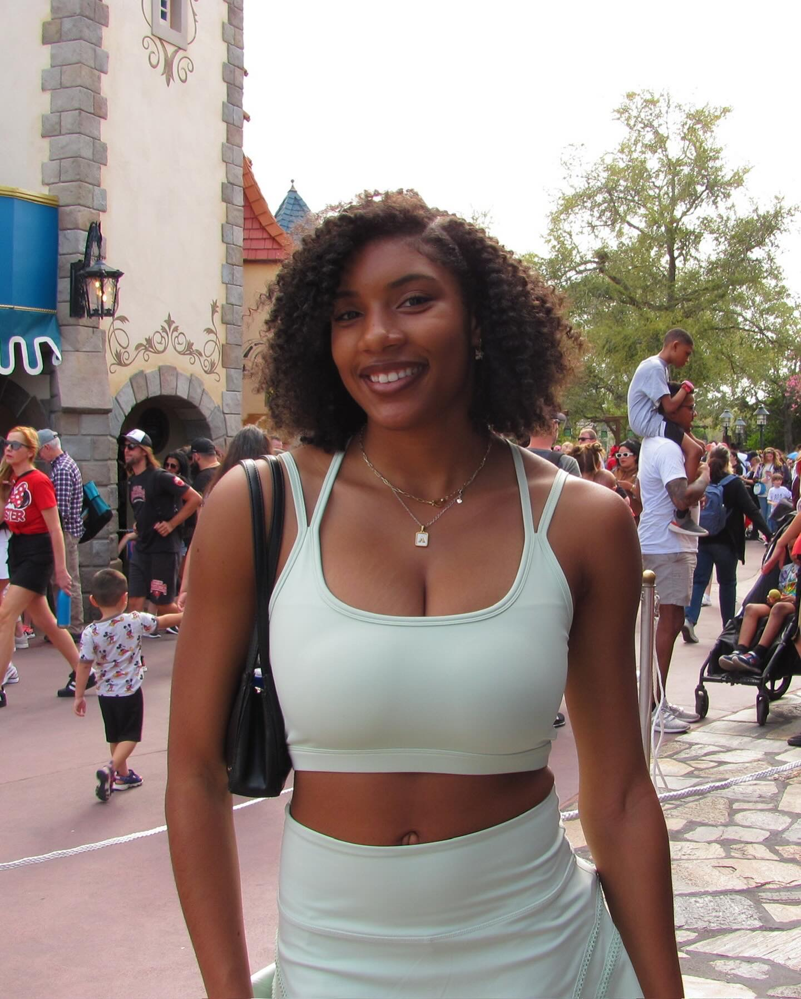
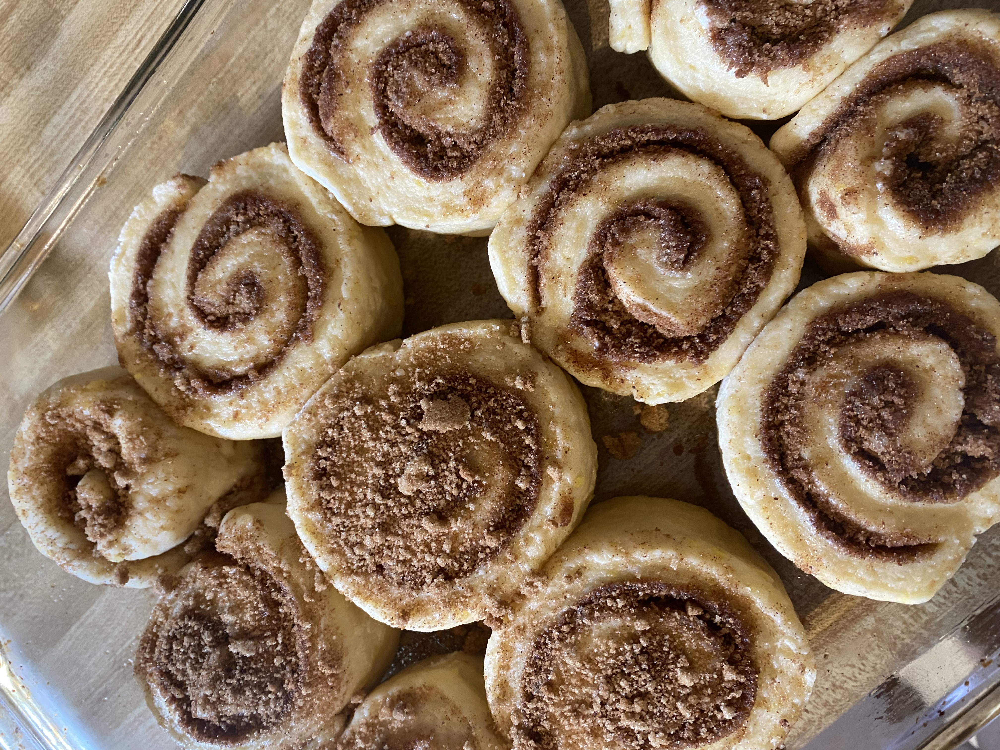

About
Hi, I'm Amari Bullock
[A short line that sums you up.]

My story
Hello! My name is Amari Bullock, and I'm a second-year graduate student at Colorado School of Mines, pursuing a master's degree in computer science. I earned my bachelor's degree in the same field from North Carolina A&T State University. In the classroom, my interests are in AI/ML and UI design; outside of it, I have a plethora of interests you can dive into throughout this site.
[A paragraph about why you started this blog.]
Currently into
- Eating: [dish or restaurant]
- Watching: [show or movie]
- Following: [team or league]
- Making: [crochet project]
A few of my favorites
